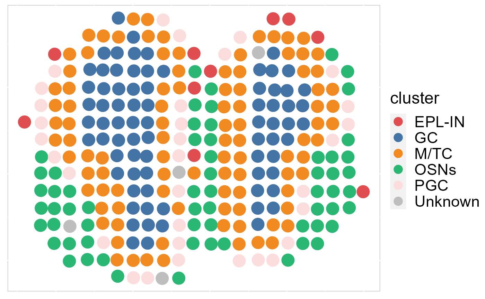
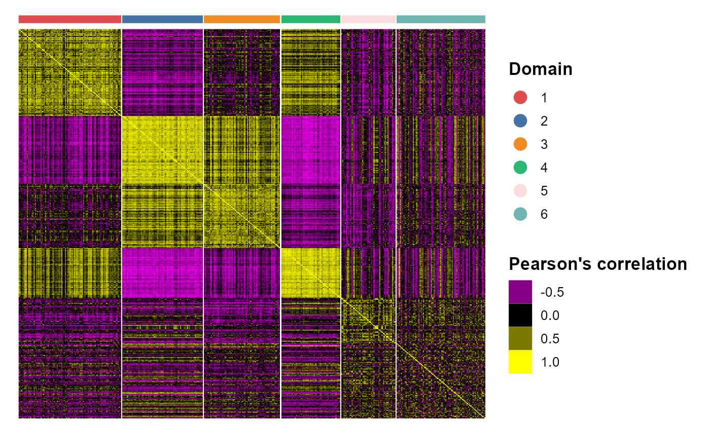

We provide a series of vignettes, tutorials, and analysis walkthroughs to help users get started with SRTpipeline. You can also check out our Reference page which contains a full list of functions available to users.
Introductory Vignettes
For new users of SRTpipeline, we suggest starting with a guided walk through of a spatial transcriptomics dataset (SampleID: 151672) for human dorsolateral prefrontal cortex (DLPFC) from Github. This tutorial implements the major components of a standard unsupervised clustering workflow including QC and data filtration, calculation of high-variance genes or spatially variable genes, dimensional reduction, Markov random field-based spatial clustering, and the identification of cluster markers.
We provide additional introductory vignettes for users who are interested in analyzing multiple datasets.

|
||
| A basic overview of SRTpipeline that includes an introduction to common analytical workflows. | Learn to integrate spatially-resolved transcriptomic data with examples from 10x Visium. | An introduction to working with single SRT sample in SRTpipeline. |
| GO | GO | GO |
Single SRT Data Analyses
Recently, we have developed computational methods ( SC-MEB, DR-SC and SpatialAnno) for analysis of slngle SRT dataset generated by different platforms. As an example, we provide a guided walk through for analyzing a mouse embryo seqFISH dataset and a mouse olfactory bulb ST dataset. The workflow consists of QC and data filtration, calculation of high-variance genes or spatially variable genes, dimension reduction, spatial clustering/annotation, the identification of cluster markers and trajectory inference.

|
 | |
| An introduction to SC-MEB | Learn how to use DR-SC | Learn how to use SpatailAnno |
| GO | GO | GO |
Mulitple SRT Data Integration
Recently, we have developed computational methods ( PRECAST and iSC.MEB) for integrated analysis of SRT datasets generated across different conditions, experimental batches, individuals or datasets with only partially shared cell/domain clusters. As an example, we provide a guided walk through for integrating and comparing hepatocellular carcinoma (HCC) Visium data generated under different conditions. There are four slides of in-house HCC data generated using the 10x Visium platform, with two slides from tumors (HCC1 and HCC2) and two from tumor-adjacent tissues (HCC3 and HCC4) from an HCC patient. We provide additional vignettes demonstrating how to leverage iSC.MEB to efficiently integrate large datasets.

|

|
|
| An introduction to integrating spatially resolved transcriptomics (SRT) datasets in order to identify and compare shared embeddings and cell types across experiments. | Learn how to rapidly integrate multiple SRT datasets, achieve spatial clustering and align embeddings using uncorrected PCs. | Learn how to integrate multiple SRT datasets, achieve embeddings alignment and spatial clustering using normlized gene expression. |
| GO | GO | GO |
|  |

|

|
| Analyze two human breast cancer data using integration method. | Annotate, visualize, and interpret an scATAC-seq experiment using scRNA-seq data from the same biological system. | Tips and examples for integrating very large scRNA-seq datasets (including >200,000 spots). |
| GO | GO | GO |
Other
Here we provide a series of short vignettes to demonstrate a number of features that are commonly used in SRTpipeline. We’ve focused the vignettes around questions that we frequently receive from users. Click on a vignette to get started.

|

|

|
| An overview of the major visualization functionality within SRTpipeline. | XX examples | XX examples |
| GO | GO | GO |

|

|

|
| XX examples | Convert data between formats for different analysis tools. | Speed up compute-intensive functions with parallelization. |
| GO | GO | GO |